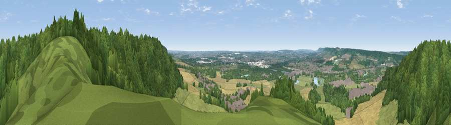

Viewpoint near Burham
#19771 in England · top 10% of its area beats it · near BurhamWhere it is
The exact computed spot (TQ 72775 62875). Click the marker for map links.
The view, rendered

A 360° render of this exact spot computed from the terrain model, tree cover and land cover — summer colours, afternoon light, calibrated against photographs of famous viewpoints. Real trees, hedges and buildings will differ in detail.
The panorama
Grey silhouette: terrain skyline in each direction (720 bearings, Earth curvature and refraction included). Dashed green: skyline with trees (+15 m) and buildings (+8 m) as obstacles. Blue strip: how far the ground is visible on each bearing.
Where the view opens
Wedge length = distance to the farthest visible ground on that bearing (vegetation-aware). Rings at 10, 25 and 50 km.
What fills the view
51% woodland · 31% grassland · 12% cropland · 5% built-up · 1% water
Angular shares of the visible panorama (visual magnitude), not map area. Landscape diversity 0.51 (0–1 Shannon).
Key numbers
More beautiful places nearby
The staircase of upgrades: each row has a higher view potential than everything closer. Driving times are estimates from straight-line distance, calibrated against real road routing — check an actual route before setting out.
| Place | Direction | Drive | Score |
|---|---|---|---|
| Viewpoint near Bluebell Hill | SE · 3 km | ~7 min | 54.6 |
| Viewpoint near Bluebell Hill | SE · 4 km | ~8 min | 60.9 |
| Viewpoint near Birling | W · 6 km | ~12 min | 65.1 |
| Viewpoint near Shipbourne | WSW · 19 km | ~32 min | 66.2 |
| Viewpoint near Charing | ESE · 25 km | ~41 min | 68.6 |
| Viewpoint near Westwell | ESE · 29 km | ~46 min | 72.2 |
| Viewpoint near Lympne | SE · 46 km | ~67 min | 72.6 |
| Tolsford Hill | ESE · 49 km | ~70 min | 77.9 |
51.33871, 0.47906 · source: screening · position refined by local search. Computed location — check access rights before visiting.